NouveauFormat familial · 1 kg
SINJY by Tartinella
Notre pâte à tartiner aux noisettes dans une grande boîte d'un kilo, pour les familles nombreuses et les pâtissiers. Même bonne recette, plus de partage.
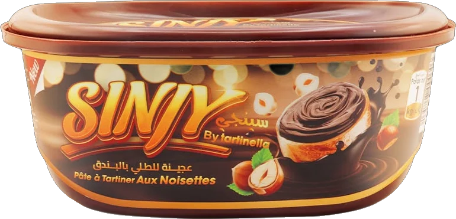
Du chocolat aux noisettes au beurre de cacahuètes, Tartinella prépare à Sidi Moussa des pâtes à tartiner généreuses, pensées pour le petit-déjeuner, le goûter et la pâtisserie des familles algériennes.
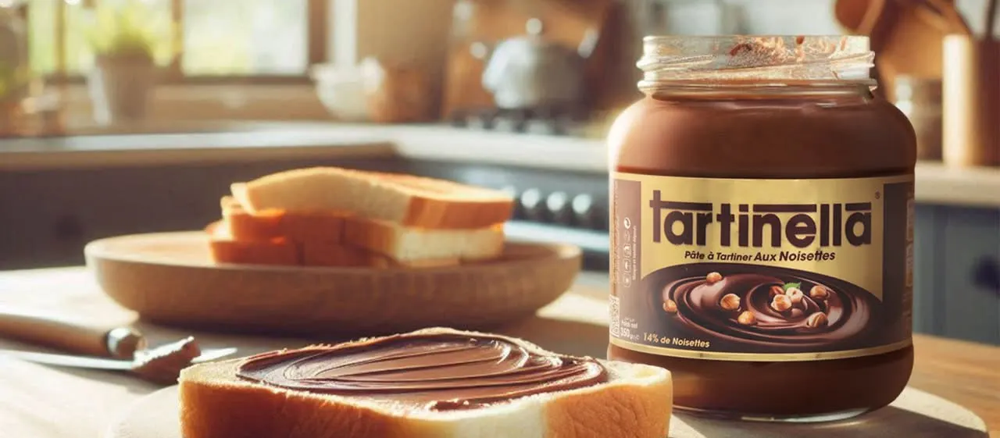
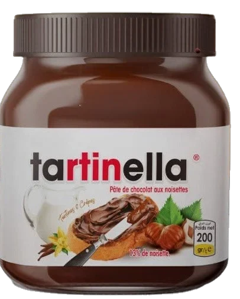
Sept recettes, un même engagement : une texture onctueuse, un goût franc et un pot qui trouve sa place sur toutes les tables, du petit-déjeuner au dessert.
Notre pâte à tartiner aux noisettes dans une grande boîte d'un kilo, pour les familles nombreuses et les pâtissiers. Même bonne recette, plus de partage.

La pâte de chocolat aux noisettes qui a fait connaître Tartinella. 13 % de noisettes.
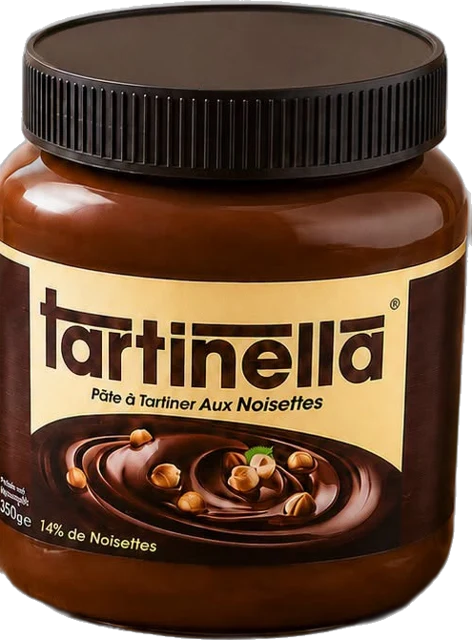
Une recette plus intense, plus riche en noisettes : 14 %, pour les vrais amateurs.
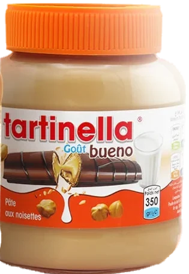
Une pâte claire aux noisettes au goût lacté et croustillant, la préférée des enfants.
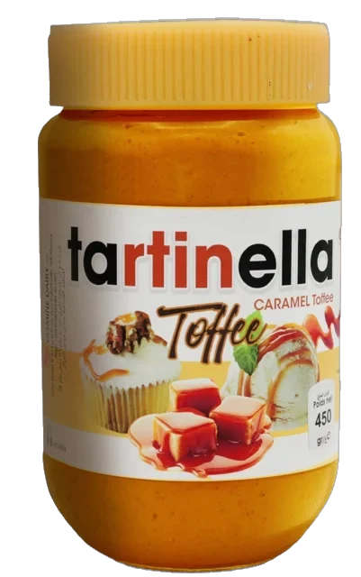
Un caramel fondant au goût de toffee, idéal sur les crêpes, les gaufres et les gâteaux.
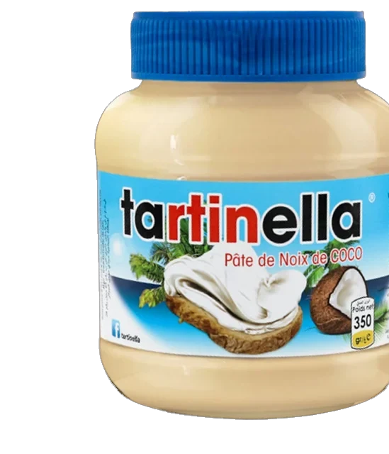
Une pâte blanche à la noix de coco, douce et parfumée, pour une tartine qui sent les vacances.
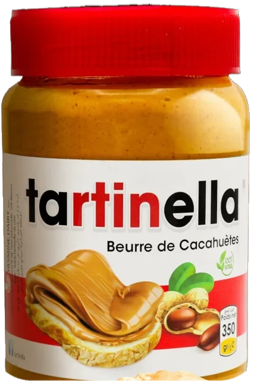
Des cacahuètes grillées, rien de plus gourmand pour les sportifs et les goûters.
Supérettes, grossistes, pâtisseries : devenez revendeur Tartinella.
Devenir revendeur →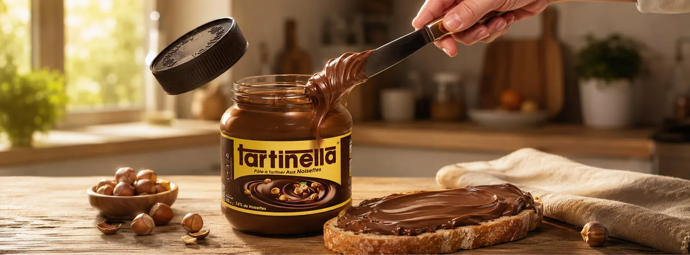
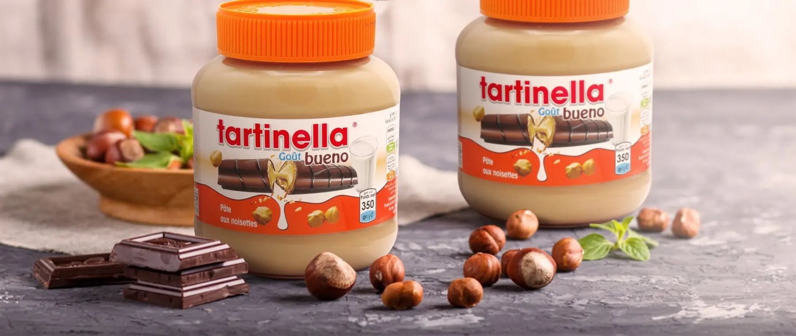
Noisettes, cacao, noix de coco, cacahuètes : chaque recette part d'un ingrédient star, dosé pour qu'on le reconnaisse dès la première bouchée.
Une pâte qui s'étale facilement, même au sortir du placard, et qui tient au four pour la pâtisserie.
Une production locale qui permet des prix justes et une disponibilité régulière chez nos revendeurs.
Crêpes du goûter, pancakes du week-end, gâteaux de fête : Tartinella s'invite dans toutes les recettes de la maison.
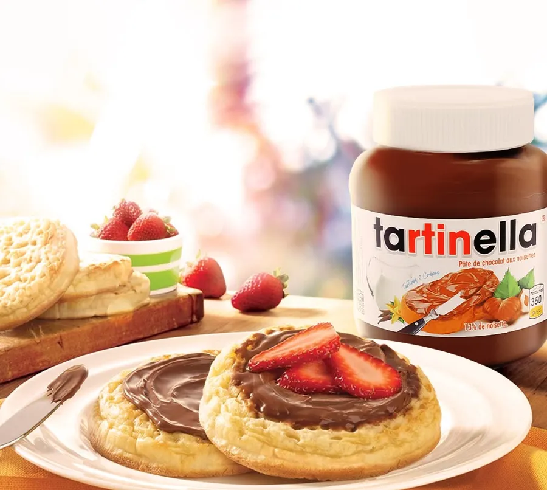
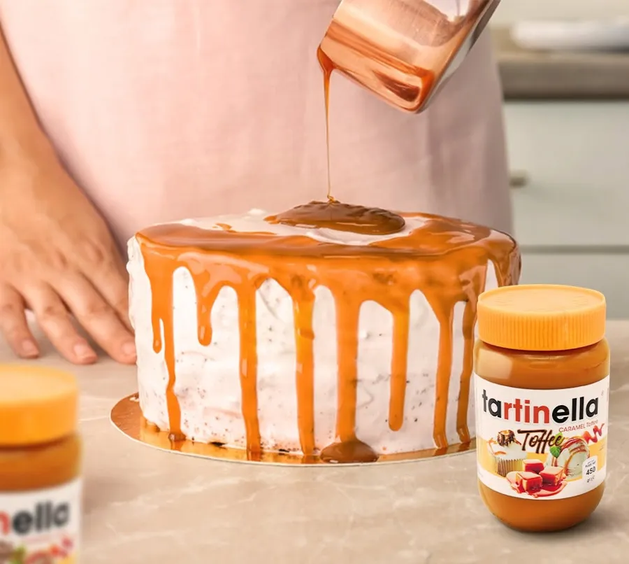
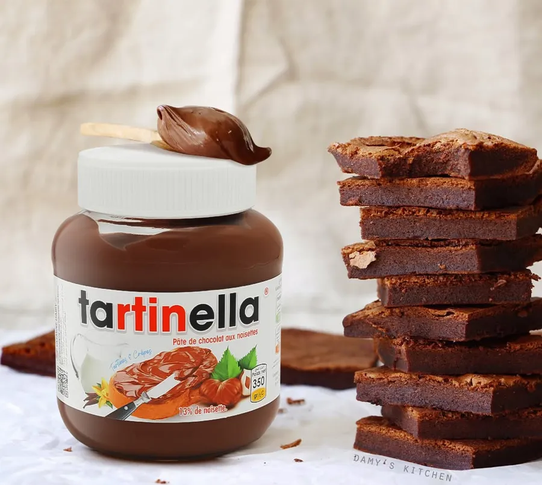
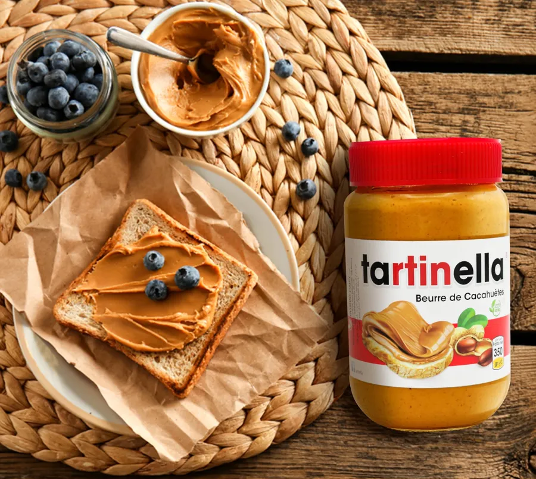
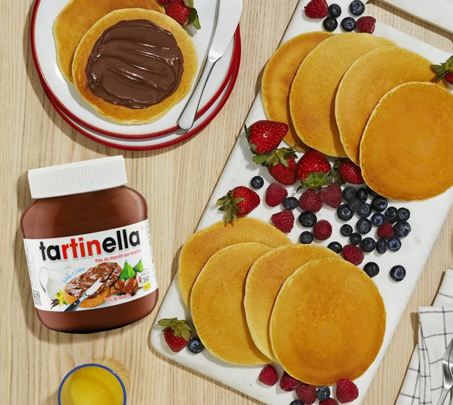
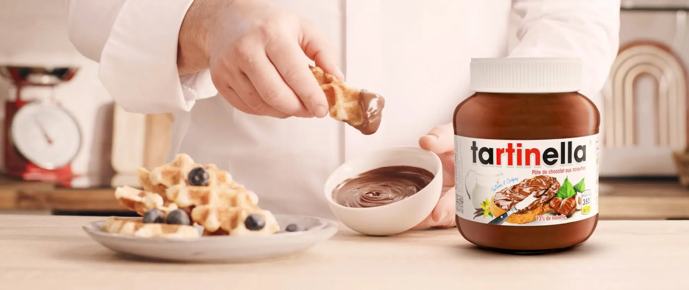
تبدلت الحطة و زادت البنة
Concours, recettes, jeux et moments de partage : chaque semaine, la page Tartinella réunit une grande famille de fans partout en Algérie.
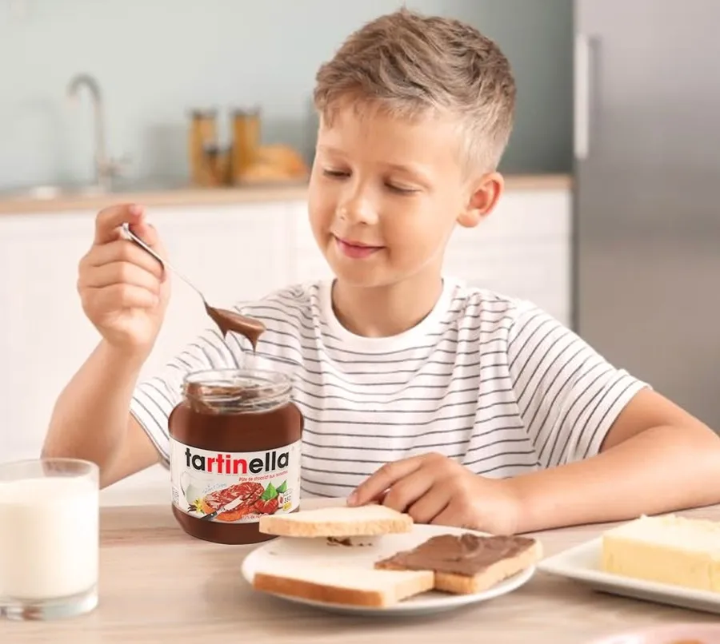
Le goûter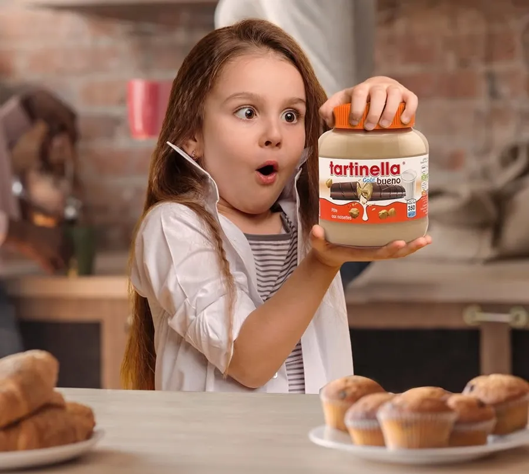
Waw !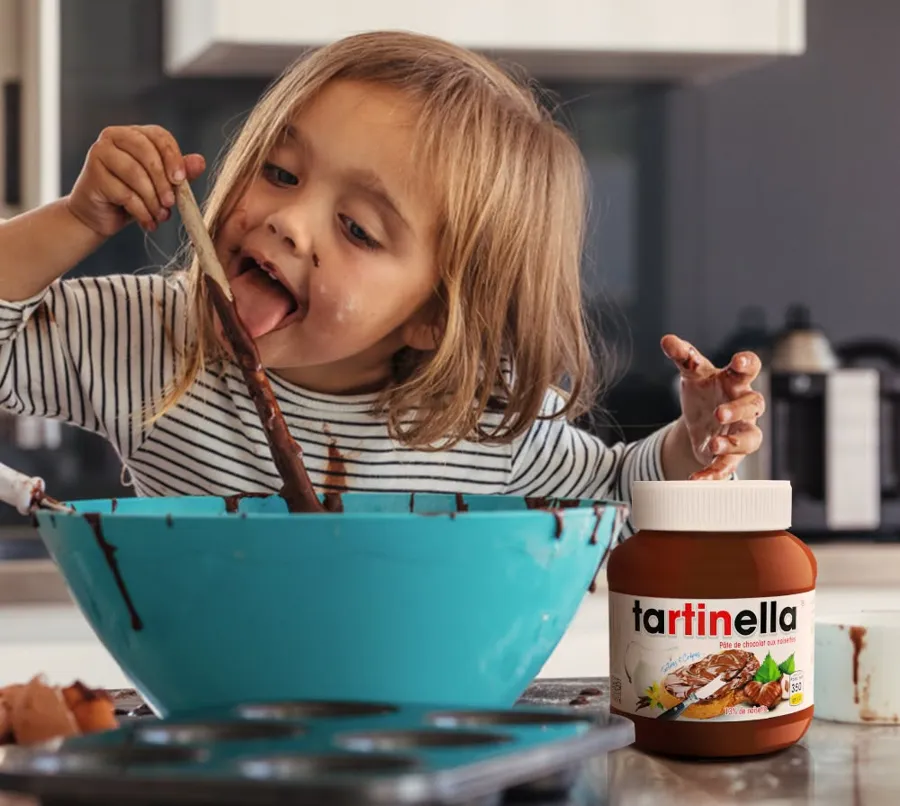
Petite cheffeSupérettes, grossistes, pâtisseries, boulangeries : rejoignez le réseau de revendeurs Tartinella partout en Algérie.